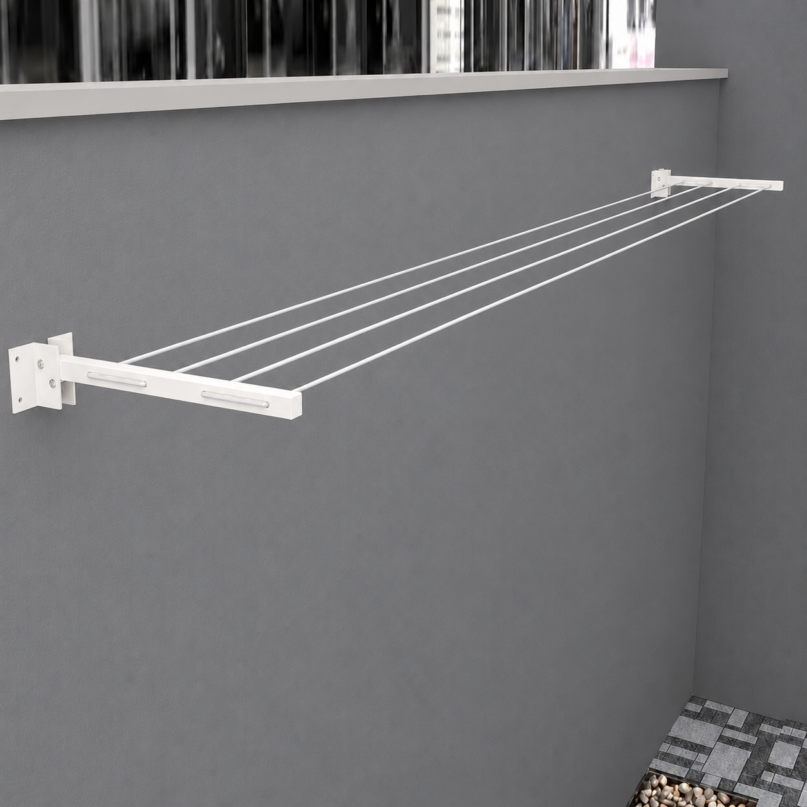
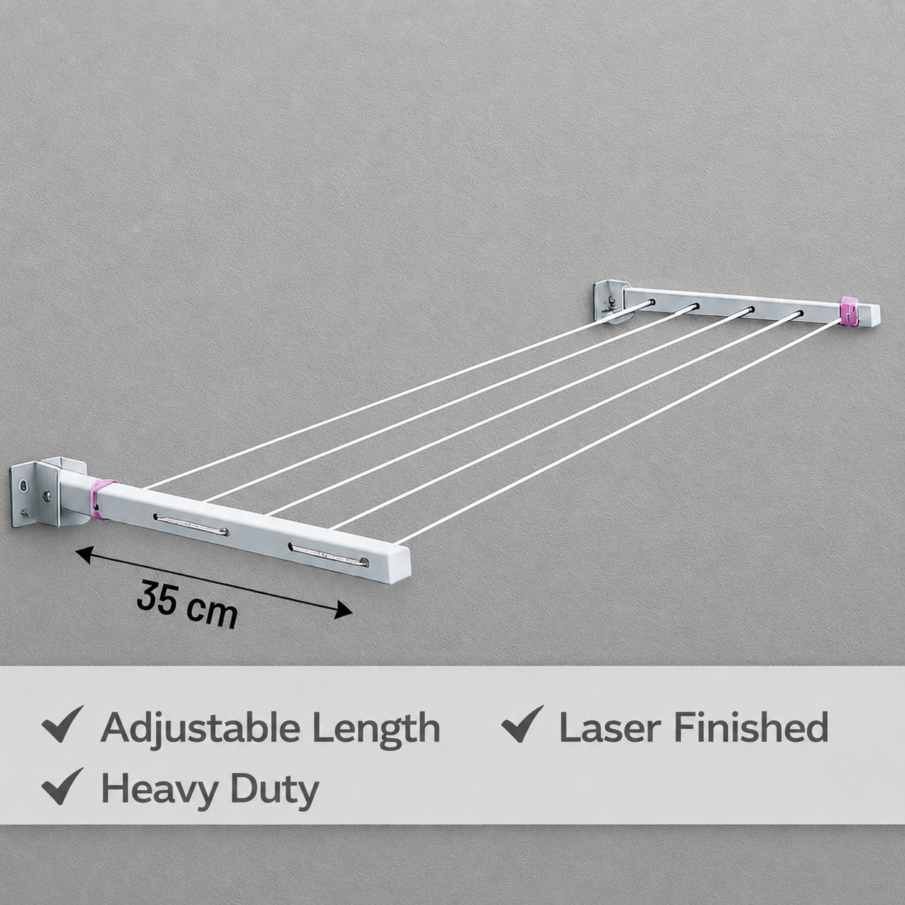
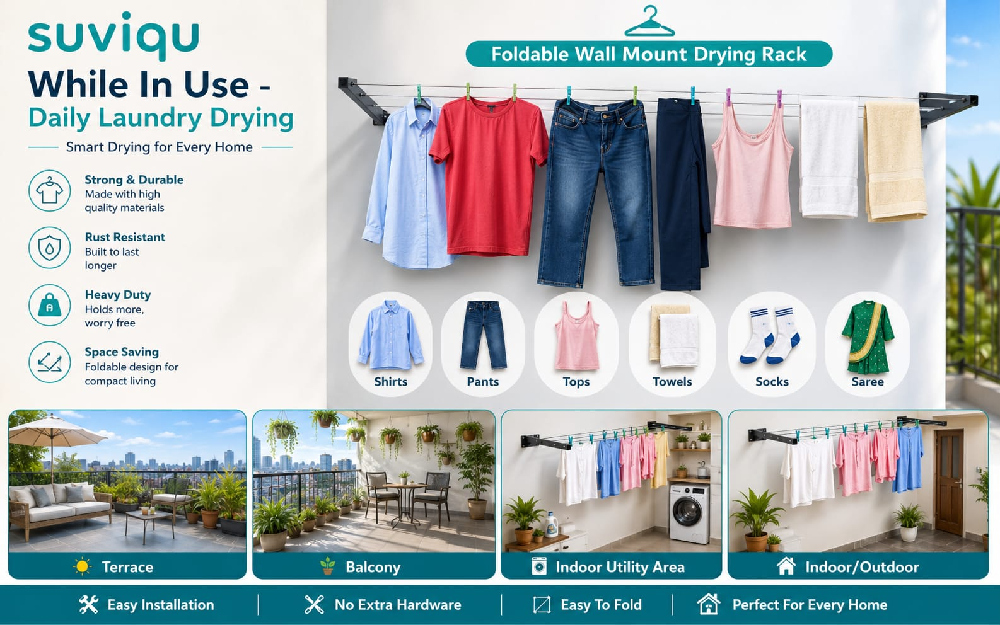
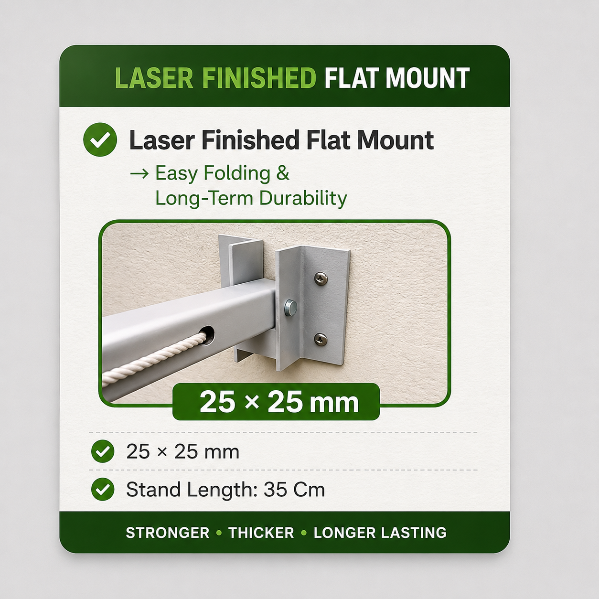
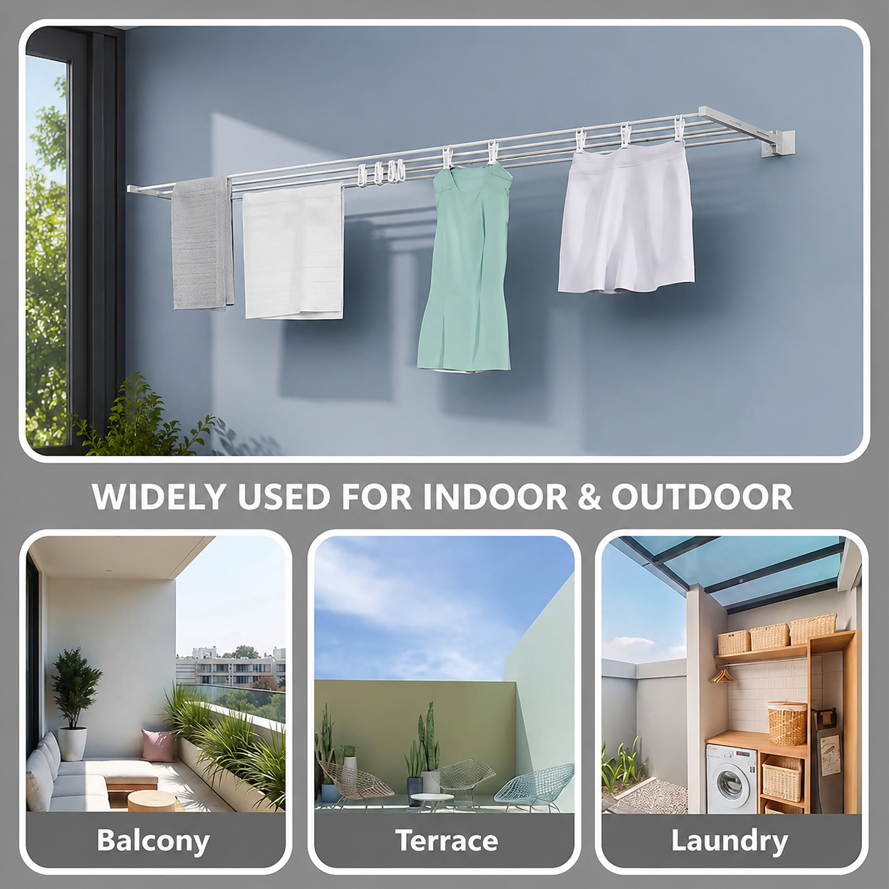
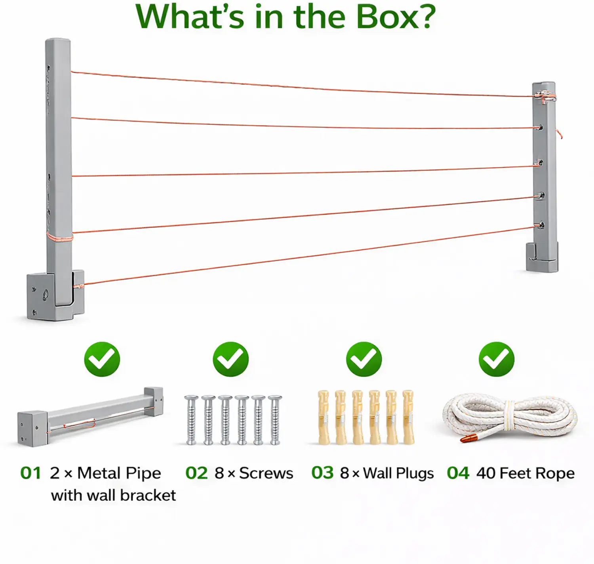

Wall Mounted Clothes Drying Stand
Premium quality heavy duty iron wall mounted clothes drying stand designed for homes, balconies and utility areas. Its foldable and space saving design makes it suitable for everyday clothes drying.
Product Features
- Adjustable from 1 to 5 Lines
- Heavy Duty Iron Construction
- Wall Mounted Design
- Foldable & Space Saving
- Strong & Durable Structure
- Ideal for Balcony, Home & Utility Area
- Easy Installation
Price
Product Specification
Material
Iron / MS
Type
Wall Mounted Clothes Drying Stand
Design
Foldable & Space Saving
Lines
1 to 5 Lines
Usage
Home / Balcony / Utility Area
Brand
S V Trading
SKU
SVT-WCDS-15